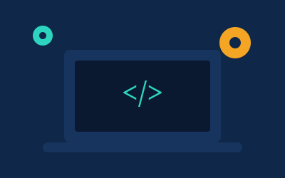

Custom Software Development
We build custom web and desktop applications for your business. Our engineers work with you from the start of the project to the final deployment, so the software really matches how your team works every day.

Building reliable software for growing businesses
We build custom web and desktop applications for your business. Our engineers work with you from the start of the project to the final deployment, so the software really matches how your team works every day.

Moving to the cloud can feel risky, but it does not have to be. Our consultants help you plan, migrate, and secure your systems, so you can grow without surprise costs.